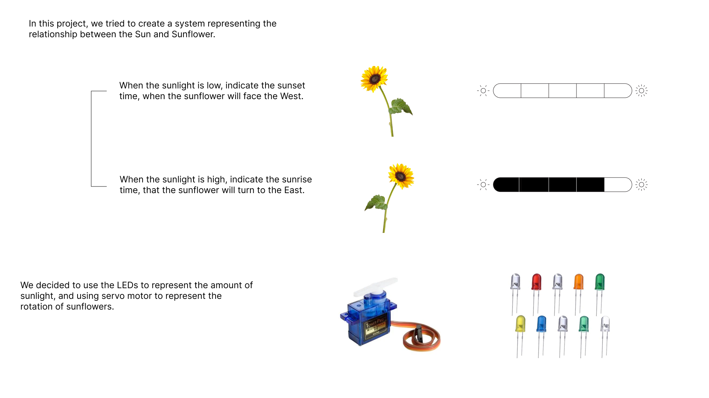
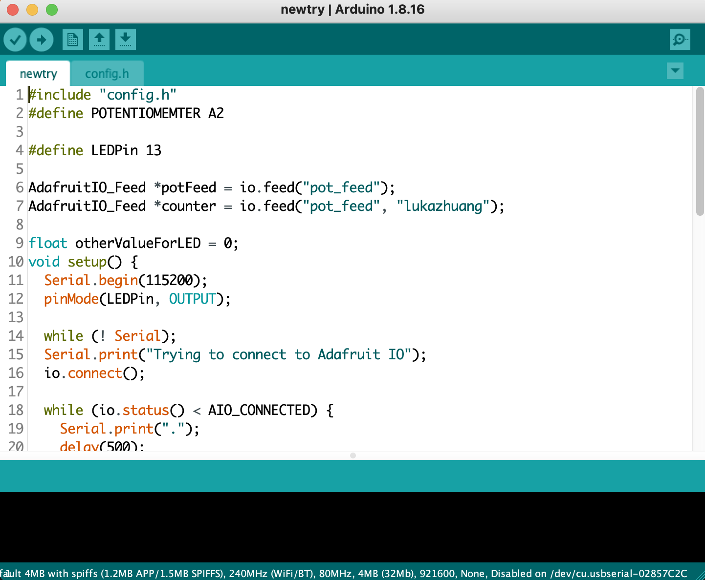
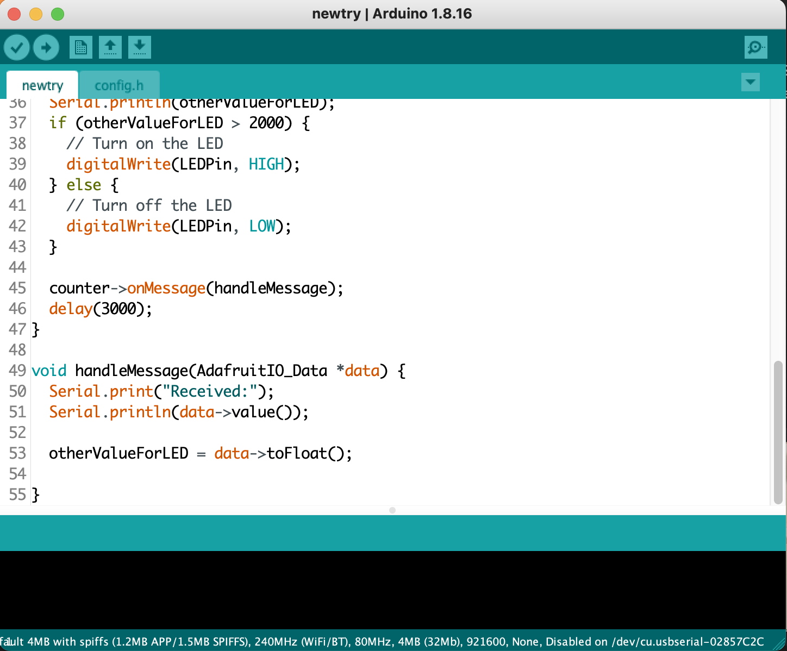
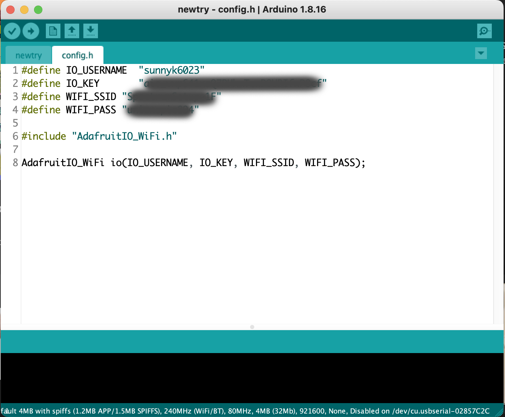
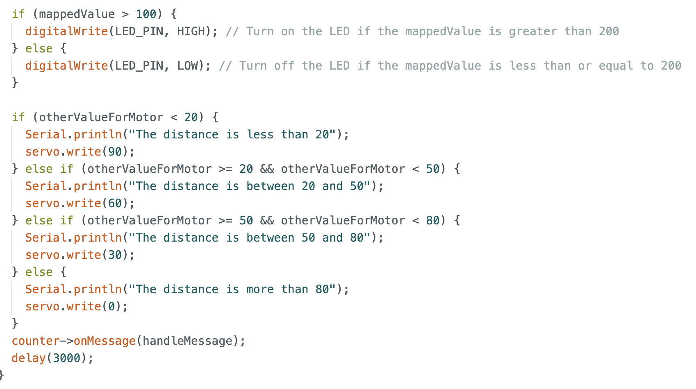
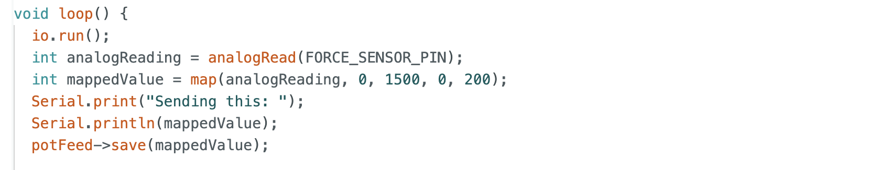
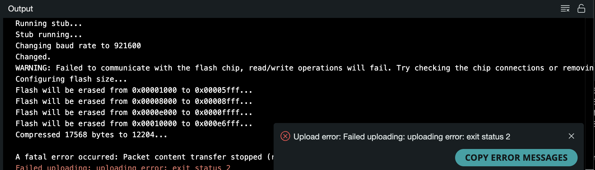

I use a force sensor to send the data to my Adafruit IO, and my partner’s circuit receives the data to light up LEDs based on the scale of the value. My partner Luka uses ultrasonic sensor to define the distance to control the servo motor on my board.

This Creative Technologies project demonstrates sending data from my circuit with a specific sensor to my partner’s circuit to run some output. I also need to receive the data from my partner’s circuit with her sensor to run some output on my board.

In this project, we tried to create a system representing the relationship between the Sun and Sunflower. We decided to use a force sensor and an ultrasonic sensor for input and LEDs and a servo motor for output.
 For my part, I used a force sensor to light up multiple LEDs. First, I tested on my board, and the LEDs received the data from the same circuit. Also, I added code for receiving the data from my partner’s Adafruit IO (otherValueForMotor).
After demonstrating to test LEDs with a force sensor, I added commands in the code for connecting to my Adafruit IO. I needed to check the Wi-Fi, IO key, username, and feed name carefully. Also, the feed needed to be public to send to others.

Depends on how much I press, if the value is bigger than 2000, 2 LEDs light up. If the value is between 1000 and 2000, 1 LED lights up. If the value is less than 1000, no LEDs light up.
Finally replaced the code for LEDs to servo motor. And rewrite the code that depends on the value from my partner’s ultrasonic sensor change to the specific angles.


We tested the connection to run each other’s output (LEDs and servo motor) by using our own Adafruit IO data in real time. We faced a problem during this testing that the ultrasonic sensor was too sensitive to read the distance from hands or paper, and the resulting output could not be clearly shown.
Because of raw data from sensors, we used the command map to adjust the range of values from raw data to make the relationships clearer.
The last problem I encountered was an error called status2, and it was resolved by disconnecting A0, pin 12, and pin 13, which were occupying the storage space mostly, to free up space for running the code.
Using Adafruit IO may introduce avoidable delays depending on the condition of the Wi-Fi and the Adafruit IO environment itself. If immediate project data processing is crucial, it may not be suitable to rely on Adafruit IO. However, if the goal is to freely share data location, it can be a great tool to explore.